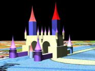

Tulp Office Tower
Castello Di Arthuro
Rosa Nera, The Hague
Organic_Villas Hotels
WaterPoort Amsterdam

5th Place in Euro Archi Eco Contest with a design for Kaiserslautern called:
Twin Helix
Philosophy
What makes a building durable?What makes a building unique?
Well, all old buildings in towns, which still draw crowds,
were once build for rich people, that wanted to show off how well they were doing.
And to show off their increadible richness
they did not order the cheapest building with the least decorations.
No, they ordered lavish decorations and refined shapes.
No cost nor effort was saved to make something remarkable.
Every square millimeter of the outer and inner surface was used
to express
their state in the society or their view.
And so if you look back and ask whether it was durable,
you can answer:
Yes, the art and decorations made it so.
Most modern day achitecture is a waste of space and money,
because a lack of effort in the design and decorations
simply doesn't produce the added value to stand the tooth of time.
| Consulting Architects: | ||
| Paul Rutjes | MSc | Technical University Delft |
| Francois Verhoef | MSc | Technical University Delft |
| Consulting Structural Designer: | ||
| Eef Siemelink | MSc | Technical University Delft |